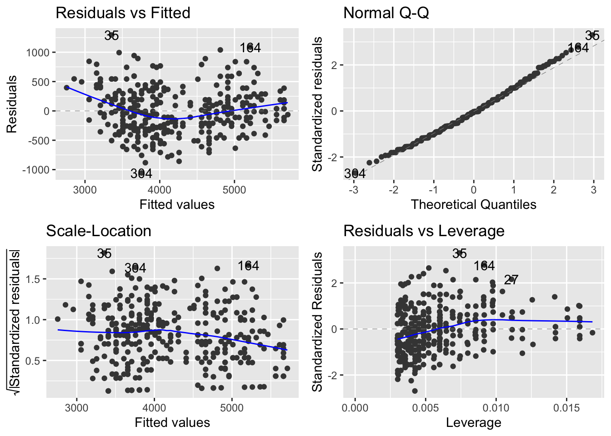

library(tidyverse)
library(tidymodels)
library(palmerpenguins)
penguins <- drop_na(penguins)STA 210
Whole game
Simple linear regression
Model fitting
slr_fit <- linear_reg() |>
set_engine("lm") |>
fit(body_mass_g ~ flipper_length_mm, data = penguins)Model summary
tidy(slr_fit)# A tibble: 2 × 5
term estimate std.error statistic p.value
<chr> <dbl> <dbl> <dbl> <dbl>
1 (Intercept) -5872. 310. -18.9 1.18e- 54
2 flipper_length_mm 50.2 1.54 32.6 3.13e-105Model evaluation
glance(slr_fit)# A tibble: 1 × 12
r.squared adj.r.squared sigma statistic p.value df logLik AIC BIC
<dbl> <dbl> <dbl> <dbl> <dbl> <dbl> <dbl> <dbl> <dbl>
1 0.762 0.761 393. 1060. 3.13e-105 1 -2461. 4928. 4940.
# … with 3 more variables: deviance <dbl>, df.residual <int>, nobs <int>Prediction
For new data:
new_penguin <- tibble(flipper_length_mm = 172)
predict(slr_fit, new_penguin)# A tibble: 1 × 1
.pred
<dbl>
1 2754.For data used to fit the model:
Warning
Which of the following, if any, to use? I wish augment(slr_fit) worked…
augment(slr_fit) # wish it workedError in augment.model_fit(slr_fit): argument "new_data" is missing, with no defaultaugment(slr_fit$fit) # avoid this# A tibble: 333 × 8
body_mass_g flipper_length_mm .fitted .resid .hat .sigma .cooksd
<int> <int> <dbl> <dbl> <dbl> <dbl> <dbl>
1 3750 181 3206. 544. 0.00912 393. 0.00889
2 3800 186 3456. 344. 0.00644 393. 0.00249
3 3250 195 3908. -658. 0.00355 392. 0.00500
4 3450 193 3807. -357. 0.00398 393. 0.00166
5 3650 190 3657. -7.03 0.00485 394. 0.000000781
6 3625 181 3206. 419. 0.00912 393. 0.00528
7 4675 195 3908. 767. 0.00355 392. 0.00680
8 3200 182 3256. -55.8 0.00852 394. 0.0000872
9 3800 191 3707. 92.8 0.00453 394. 0.000127
10 4400 198 4058. 342. 0.00314 393. 0.00119
# … with 323 more rows, and 1 more variable: .std.resid <dbl>augment(slr_fit, new_data = penguins) # needs good articulation why it's diferent than tidy() and glance()# A tibble: 333 × 10
species island bill_length_mm bill_depth_mm flipper_length_mm body_mass_g
<fct> <fct> <dbl> <dbl> <int> <int>
1 Adelie Torgersen 39.1 18.7 181 3750
2 Adelie Torgersen 39.5 17.4 186 3800
3 Adelie Torgersen 40.3 18 195 3250
4 Adelie Torgersen 36.7 19.3 193 3450
5 Adelie Torgersen 39.3 20.6 190 3650
6 Adelie Torgersen 38.9 17.8 181 3625
7 Adelie Torgersen 39.2 19.6 195 4675
8 Adelie Torgersen 41.1 17.6 182 3200
9 Adelie Torgersen 38.6 21.2 191 3800
10 Adelie Torgersen 34.6 21.1 198 4400
# … with 323 more rows, and 4 more variables: sex <fct>, year <int>,
# .pred <dbl>, .resid <dbl>predict(slr_fit, new_data = penguins)# A tibble: 333 × 1
.pred
<dbl>
1 3206.
2 3456.
3 3908.
4 3807.
5 3657.
6 3206.
7 3908.
8 3256.
9 3707.
10 4058.
# … with 323 more rowsInference
Simulation-based inference
Confidence interval for the slope:
Warning
Since earlier we did fit (y ~ x, data) it’s odd to switch gears here and do specify() and then fit(). I wonder if starting with tidymodels to begin with it’s better not at all to introduce infer? What would be the alternative way of doing the following in tidymodels then?
set.seed(1120)
observed_fit <- penguins |>
specify(body_mass_g ~ flipper_length_mm) |>
fit()
boot_fits <- penguins |>
specify(body_mass_g ~ flipper_length_mm) |>
generate(reps = 100, type = "bootstrap") |>
fit()
get_confidence_interval(
boot_fits,
point_estimate = observed_fit,
level = 0.95,
type = "percentile"
)# A tibble: 2 × 3
term lower_ci upper_ci
<chr> <dbl> <dbl>
1 flipper_length_mm 47.3 52.8
2 intercept -6410. -5297. Hypothesis test for the slope:
set.seed(1234)
null_dist <- penguins |>
specify(body_mass_g ~ flipper_length_mm) |>
hypothesize(null = "independence") |>
generate(reps = 100, type = "permute") |>
fit()
get_p_value(
null_dist,
obs_stat = observed_fit,
direction = "two-sided"
)Warning: Please be cautious in reporting a p-value of 0. This result is an
approximation based on the number of `reps` chosen in the `generate()` step. See
`?get_p_value()` for more information.
Warning: Please be cautious in reporting a p-value of 0. This result is an
approximation based on the number of `reps` chosen in the `generate()` step. See
`?get_p_value()` for more information.# A tibble: 2 × 2
term p_value
<chr> <dbl>
1 flipper_length_mm 0
2 intercept 0Other inference
Warning
How do we do these with tidymodels and in a simulation-based way?
- Confidence interval for a new prediction
- Prediction interval for a new prediction
Theoretical inference
Confidence interval and hypothesis test for the slope:
tidy(slr_fit, conf.int = TRUE)# A tibble: 2 × 7
term estimate std.error statistic p.value conf.low conf.high
<chr> <dbl> <dbl> <dbl> <dbl> <dbl> <dbl>
1 (Intercept) -5872. 310. -18.9 1.18e- 54 -6482. -5262.
2 flipper_length_mm 50.2 1.54 32.6 3.13e-105 47.1 53.2
Warning
What is the recommended way to do diagnostic plots for theoretical inference, especially since augment() is not designed to be used with the full data?
library(ggfortify)Registered S3 method overwritten by 'ggfortify':
method from
autoplot.glmnet parsnipautoplot(slr_fit)
Confidence interval for a new prediction:
predict(slr_fit, new_data = new_penguin, type = "conf_int")# A tibble: 1 × 2
.pred_lower .pred_upper
<dbl> <dbl>
1 2657. 2852.Prediction interval for a new prediction:
predict(slr_fit, new_data = new_penguin, type = "pred_int")# A tibble: 1 × 2
.pred_lower .pred_upper
<dbl> <dbl>
1 1974. 3534.